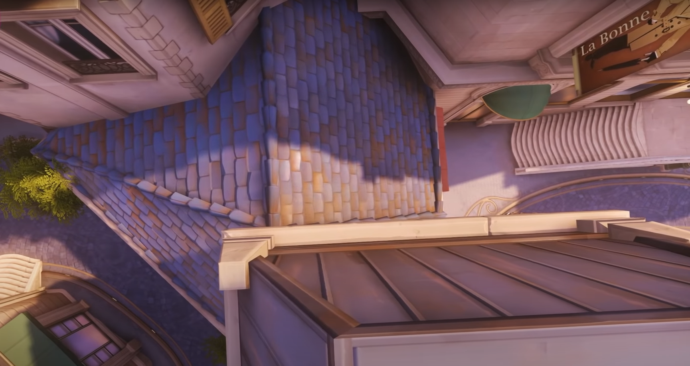
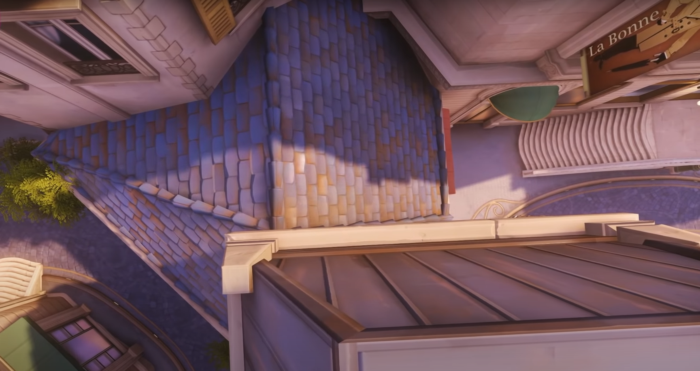

Flankierende Route
Ein alternativer Pfad, welcher neben dem Hauptpfad angesiedelt ist. Der Hauptpfad ist dabei mit Gegnern bestückt, sodass ein Positionsvorteil erlangt wird, wenn man den alternativen Pfad wählt. Eine flankierende Route kann ein separater Weg oder ein Deckungselement in einer großen Arena sein. Ein alternativer Pfad, der es Charakteren ermöglicht, Positionsvorteile zu erlangen.
Eine flankierende Route wird verwendet, um dem Spieler Optionen im Kampf zu bieten. Spieler, die den direkten Kampf bevorzugen, können die feindlichen NPCs angreifen, ohne die Flankenroute zu benutzen, während Spieler, die einen verstohleneren Stil bevorzugen, den Feinden ausweichen und von der Seite oder von hinten angreifen können. Bei einer flankierenden Route wird das Spieltempo reduziert, da ein schwieriger Abschnitt umgangen wird.
Im Level ``Paris'' von Overwatch gibt es eine aufgesplittete Straße, bei der dort platzierte Häuser als flankierende Route genutzt werden können. Dabei kann der Spieler die flankierende Route nutzen, um sich hinter Gegner zu bewegen und aus einer verdeckten Position heraus anzugreifen.